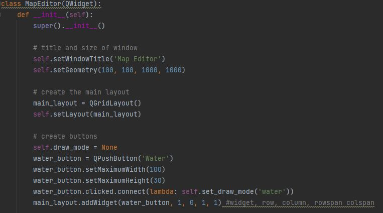
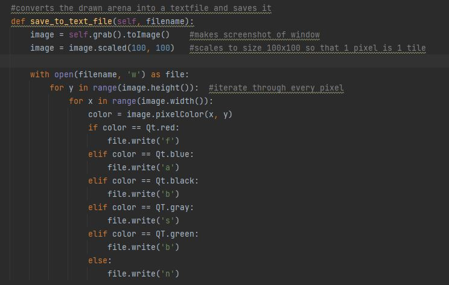
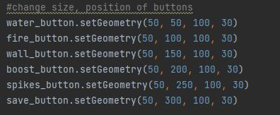
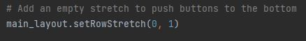
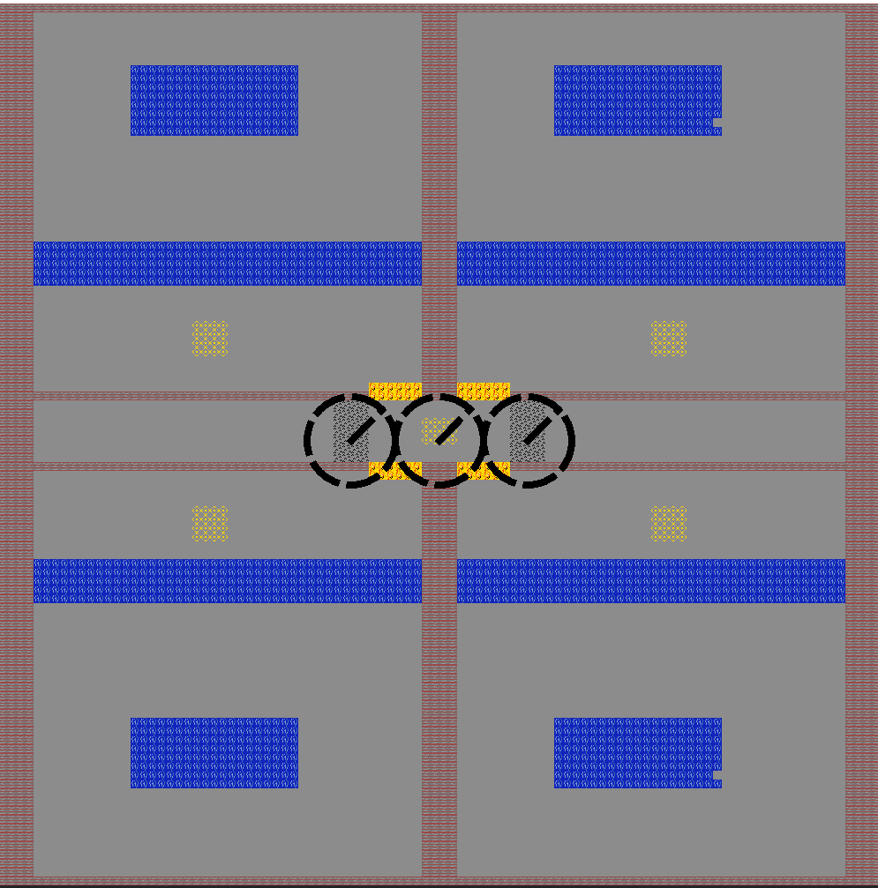
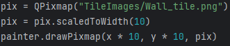
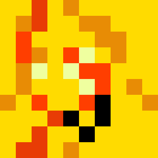
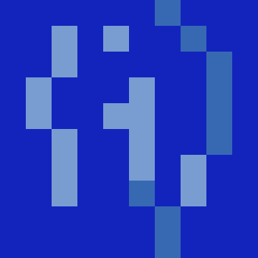
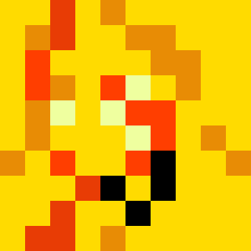
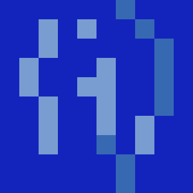

a) Map Editor:
We improved our map editor greatly, the different tiles can be drawn on the screen directly.
Through pushing a "save" - button a text file is created, which can be used to create the playable arena.
Class MapEditor:

We use a grid-layout which arranges widgets in a grid-like structure.
Clicked.connect function: When the water_button is clicked, a clicked signal is emitted, and the slot function, which is the set_draw_mode method is executed.
Without lambda, the slot function would be immediately called without waiting for the button to be clicked.
The return value of self.set.draw_mode() would be passed to, which is none. It ensures that the past argument remains a function.
The "save" button:

Difficulty:
Since we are using a grid-layout, the widgets are automatically aligned to a certain extent based on the layouts grid structure.
This made it difficult to position the buttons in a desireable way.
For example, the following code had no effect:

We helped ourselves, by adding an empty stretch which pushes the buttons at the bottom of the screen.

Further improvement:
Instead of just coloring the tiles, we want to create the playable arena by letting the user draw our graphical tiles on the screen.
A backtrack option to reset the latest drawing would be useful.

b) We use the images drawn in Task 2 in order to represent the tiles graphically. We currently differenciate between Normal, Fire, Water, Wall, Boost and Spike tiles.

The images are drawn each time the arena is drawn, we first check in the Text file of the arena which tile is at the given coordinate, we then load the corresponding image and scale it down to be 10 x 10 pixels large using a pixmap.

c) We changed the Robots from directly using a movement Speed variable to determine their speed to now calculate their current velocity using acceleration and the time between "frames".
The same thing was done to the calculation of rotational speed.
To avoid reaching infinite speeds we also introduced constants for maximum movement speed and maximum rotational speed.
This is where we deviate a little from the original Task and instead of a programm wide constant introduce a different constant for every "type" of robot. This will allow us to have more or less agile types of robots in the future.
Furthermore we did not clamp the robots aceleration but instead it's speed. Implementation of speed and aceleration:
 


